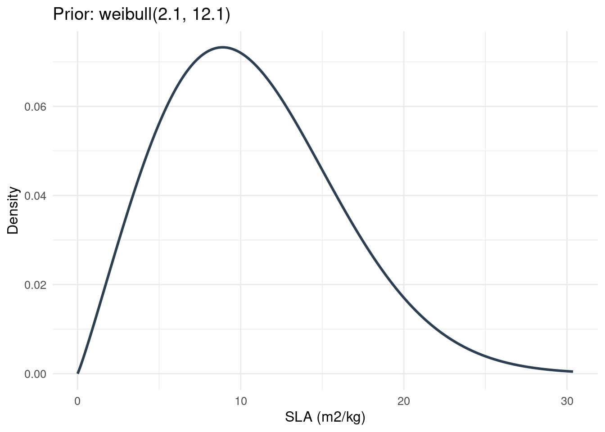
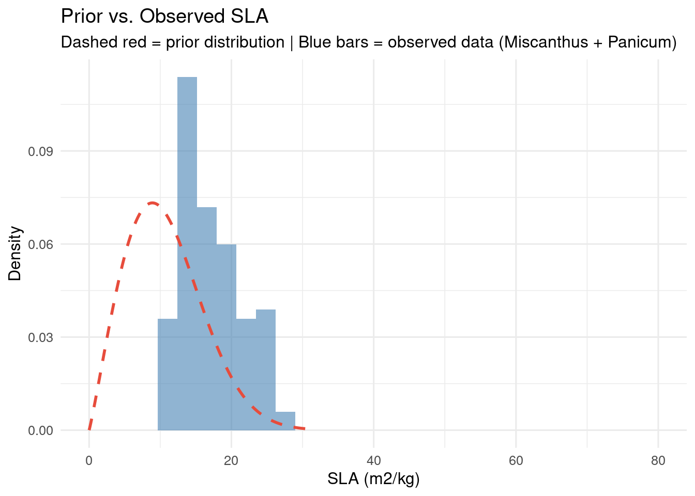

library(betydata)
library(dplyr)
library(ggplot2)Working with Plant Functional Types and Priors
What you will learn
- How Plant Functional Types (PFTs) organize species for ecosystem modeling
- How prior distributions encode parameter knowledge before Bayesian inference
- How to visualize priors and compare them to observed trait data
Background
Plant Functional Types
Ecosystem models like PEcAn simulate how plants exchange carbon, water, and energy with the atmosphere. These models require parameter values for photosynthesis rates, leaf properties, allocation fractions, and other ecophysiological quantities. Rather than parameterizing every species individually, models group species into Plant Functional Types (PFTs)—categories like “temperate deciduous trees” or “C4 grasses”—and estimate shared parameters for each group.
Bayesian Parameterization
PEcAn uses Bayesian inference to estimate model parameters. The workflow is:
- Prior distribution \(p(\theta)\): Encodes existing knowledge about a parameter \(\theta\) before looking at data (e.g. “SLA is around 20 m2/kg with considerable uncertainty”)
- Likelihood \(p(D|\theta)\): How probable the observed trait data \(D\) is given parameter values
- Posterior distribution \(p(\theta|D)\): Updated belief after combining prior and data via Bayes’ theorem:
\[ p(\theta | D) \propto p(D | \theta) \cdot p(\theta) \tag{1}\]
The tables in betydata provide the ingredients for this workflow: priors stores prior distributions, traitsview stores the observed data, and pfts/pfts_species/pfts_priors define which priors and species belong to each PFT.
Setup
Understanding PFTs
Available PFTs
nrow(pfts)[1] 386pfts |>
select(id, name) |>
head(20)Species Membership
Each PFT contains species assigned by researchers. The pfts_species junction table maps PFTs to species:
species_per_pft <- pfts_species |>
count(pft_id, name = "n_species")
summary(species_per_pft$n_species) Min. 1st Qu. Median Mean 3rd Qu. Max.
1 1 2 1285 19 49626 miscanthus_pft <- pfts |>
filter(grepl("miscanthus", name, ignore.case = TRUE))
if (nrow(miscanthus_pft) > 0) {
miscanthus_species <- pfts_species |>
filter(pft_id %in% miscanthus_pft$id) |>
left_join(
species |> select(id, scientificname),
by = c("specie_id" = "id")
)
miscanthus_species
}Working with Priors
Prior Distribution Structure
Each row in the priors table specifies a probability distribution for a model parameter. The key fields are:
| Field | Description |
|---|---|
variable_id |
Which trait/parameter this prior describes |
distn |
Distribution family (e.g. norm, gamma, lnorm) |
parama |
First parameter (mean, shape, etc.) |
paramb |
Second parameter (sd, rate, etc.) |
priors |>
count(distn, sort = TRUE) |>
knitr::kable()| distn | n |
|---|---|
| unif | 325 |
| norm | 239 |
| beta | 99 |
| lnorm | 94 |
| weibull | 59 |
| gamma | 55 |
| binom | 7 |
| exp | 6 |
| pois | 5 |
priors |>
left_join(variables |> select(id, name), by = c("variable_id" = "id")) |>
count(name, sort = TRUE) |>
head(15) |>
knitr::kable()| name | n |
|---|---|
| AGEMX | 21 |
| DMAX | 21 |
| DMIN | 21 |
| Gmax | 21 |
| SPRTND | 19 |
| SPRTMX | 17 |
| FROST | 15 |
| SLTA | 13 |
| SLTB | 13 |
| MPLANT | 11 |
| SLA | 11 |
| stomatal_slope | 11 |
| HTMAX | 10 |
| Vcmax | 10 |
| c2n_leaf | 10 |
Visualizing a Prior Distribution
Consider a prior for Specific Leaf Area (SLA). If the prior is \(\text{Gamma}(\alpha, \beta)\), then the density function is:
\[ f(x; \alpha, \beta) = \frac{\beta^\alpha}{\Gamma(\alpha)} x^{\alpha - 1} e^{-\beta x}, \quad x > 0 \tag{2}\]
sla_var_id <- variables |>
filter(name == "SLA") |>
pull(id)
sla_priors <- priors |>
filter(variable_id %in% sla_var_id)
eval_prior_density <- function(p, x = NULL) {
if (is.null(x)) {
x <- switch(p$distn,
"gamma" = seq(0, qgamma(0.999, p$parama, p$paramb), length.out = 1000),
"norm" = seq(p$parama - 4 * p$paramb, p$parama + 4 * p$paramb, length.out = 1000),
"lnorm" = seq(0.001, qlnorm(0.999, p$parama, p$paramb), length.out = 1000),
"beta" = seq(0.001, 0.999, length.out = 1000),
"unif" = seq(p$parama, p$paramb, length.out = 1000),
"weibull" = seq(0, qweibull(0.999, p$parama, p$paramb), length.out = 1000),
"exp" = seq(0, qexp(0.999, p$parama), length.out = 1000),
seq(0, 100, length.out = 1000)
)
}
y <- switch(p$distn,
"gamma" = dgamma(x, shape = p$parama, rate = p$paramb),
"norm" = dnorm(x, mean = p$parama, sd = p$paramb),
"lnorm" = dlnorm(x, meanlog = p$parama, sdlog = p$paramb),
"beta" = dbeta(x, shape1 = p$parama, shape2 = p$paramb),
"unif" = dunif(x, min = p$parama, max = p$paramb),
"weibull" = dweibull(x, shape = p$parama, scale = p$paramb),
"exp" = dexp(x, rate = p$parama),
rep(0, length(x))
)
list(x = x, y = y)
}
if (nrow(sla_priors) > 0) {
p <- sla_priors[1, ]
prior_result <- eval_prior_density(p)
prior_x <- prior_result$x
prior_y <- prior_result$y
ggplot(data.frame(x = prior_x, y = prior_y), aes(x, y)) +
geom_line(linewidth = 1, color = "#2c3e50") +
labs(
title = paste0("Prior: ", p$distn, "(", round(p$parama, 2), ", ", round(p$paramb, 2), ")"),
x = "SLA (m2/kg)",
y = "Density"
) +
theme_minimal(base_size = 12)
}
Linking PFTs to Priors
The pfts_priors table connects PFTs to their associated prior distributions, completing the Bayesian parameterization setup:
\[ \text{PFT} \xrightarrow{\texttt{pfts\_priors}} \text{Prior}(\theta) \xrightarrow{\texttt{variable\_id}} \text{Trait} \]
priors_per_pft <- pfts_priors |>
count(pft_id, name = "n_priors")
summary(priors_per_pft$n_priors) Min. 1st Qu. Median Mean 3rd Qu. Max.
1 5 14 14 20 43 if (exists("miscanthus_pft") && nrow(miscanthus_pft) > 0) {
pft_id_val <- miscanthus_pft$id[1]
pft_priors <- pfts_priors |>
filter(pft_id == pft_id_val) |>
left_join(priors, by = c("prior_id" = "id")) |>
left_join(variables |> select(id, name, units), by = c("variable_id" = "id"))
pft_priors |>
select(name, units, distn, parama, paramb) |>
knitr::kable(digits = 3)
}| name | units | distn | parama | paramb |
|---|---|---|---|---|
| leaf_respiration_rate_m2 | umol [CO2] m-2 s-1 | lnorm | 0.632 | 0.65 |
| cuticular_cond | umol [H2O] m-2 s-1 | lnorm | 8.400 | 0.90 |
| stomatal_slope.BB | [ratio] | lnorm | 1.240 | 0.28 |
| SLA | m2 kg-1 | weibull | 2.060 | 19.00 |
| Vcmax | umol [CO2] m-2 s-1 | lnorm | 3.750 | 0.30 |
| growth_respiration_coefficient | mol [CO2] mol-1 [net assimilation] | beta | 26.000 | 48.00 |
| Jmax | umol [photons] m-2 s-1 | weibull | 2.000 | 150.00 |
| c2n_leaf | [ratio] | gamma | 4.180 | 0.13 |
| quantum_efficiency | fraction | gamma | 90.900 | 1580.00 |
| chi_leaf | [ratio] | lnorm | 0.180 | 0.43 |
| extinction_coefficient_diffuse | NA | lnorm | -2.300 | 0.55 |
Comparing Prior to Data
A key validation step in Bayesian parameterization: compare the prior distribution to observed data. If the prior assigns negligible probability to regions where data actually falls, the prior may need revision.
Prior-Data Conflict
When the prior and data disagree strongly, the posterior will be dominated by whichever has lower variance. A very tight prior that disagrees with data can effectively ignore the data—a clear signal to revisit prior specification.
sla_data <- traitsview |>
filter(
trait == "SLA",
genus %in% c("Miscanthus", "Panicum"),
!is.na(mean),
checked >= 0
) |>
pull(mean)
if (length(sla_data) > 10 && exists("prior_x") && exists("prior_y")) {
ggplot() +
geom_histogram(
data = data.frame(sla = sla_data),
aes(x = sla, y = after_stat(density)),
bins = 30, fill = "steelblue", alpha = 0.6
) +
geom_line(
data = data.frame(x = prior_x, y = prior_y),
aes(x, y),
color = "#e74c3c", linewidth = 1, linetype = "dashed"
) +
labs(
title = "Prior vs. Observed SLA",
subtitle = "Dashed red = prior distribution | Blue bars = observed data (Miscanthus + Panicum)",
x = "SLA (m2/kg)",
y = "Density"
) +
xlim(0, 80) +
theme_minimal(base_size = 12)
}
Extracting Data for a PFT
A common workflow: retrieve all trait data for species belonging to a given PFT.
get_pft_data <- function(pft_name, trait_name = NULL) {
pft_ids <- pfts |>
filter(grepl(pft_name, name, ignore.case = TRUE)) |>
pull(id)
if (length(pft_ids) == 0) {
warning("PFT not found: ", pft_name)
return(tibble())
}
spp_ids <- pfts_species |>
filter(pft_id %in% pft_ids) |>
pull(specie_id)
result <- traitsview |>
filter(species_id %in% spp_ids)
if (!is.null(trait_name)) {
result <- result |>
filter(trait == trait_name)
}
result
}
willow_sla <- get_pft_data("salix", "SLA")
if (nrow(willow_sla) > 0) {
summary(willow_sla$mean)
} Min. 1st Qu. Median Mean 3rd Qu. Max.
7.14 10.40 11.54 12.43 13.32 26.40 Key Concepts Summary
| Concept | Table(s) | Description |
|---|---|---|
| PFT definition | pfts |
Named groupings of ecologically similar species |
| Species membership | pfts_species |
Which species belong to which PFT |
| Prior specification | priors |
Distribution family + parameters for each trait |
| PFT-Prior link | pfts_priors |
Which priors apply to which PFT |
| Observed data | traitsview |
Actual measurements for Bayesian updating |
References
- LeBauer, D. S., et al. (2018). BETYdb: a yield, trait, and ecosystem service database. GCB Bioenergy. doi:10.1111/gcbb.12420
- LeBauer, D. S., et al. (2013). Facilitating feedbacks between field measurements and ecosystem models. Ecological Monographs, 83(2), 133–154.